最近Vibe Coding(氛围编程)这个概念特别火, 很多人都在使用例如Bolt, Cursor之类的工具进行编程, 这极大提高了编程效率. 在编写小型应用时, 大模型能够发挥强大的局部代码生成能力. 然而当应用规模变大, 应用逻辑变复杂之后, 受限于大模型的能力, 还无法方便地Vibe Coding.
个人认为, 需要一款全新的工具, 创建合适的Vibe(氛围), 使开发者高效, 可靠地使用大模型编写复杂应用.
首先, 在这里用一段简短的话, 概括AI Flow开发工具的核心设计思路:
以分功能和分种类的思维拆分模块, 在大模型的帮助下进行模块实现和模块组装, 并且借助于流程图的组织性和直观性, 确保人能较快理清和掌控各个模块和流程.
上面为一段概述, 观点可能并不新颖, 但是关键是是否有一套可行的具体方案.
在阐述具体的功能和实现方式之前, 我们先来分析现有的开发和维护模式存在哪些问题.
只要使用过相关的开发工具, 想必对这些问题都有一定的感触. 这些问题证明了大模型的能力边界: 大模型擅长文本编写, 并不擅长复杂的逻辑编排; 大模型擅长做局部的代码新增, 不擅长在复杂的代码里修修改改.
其实我们需要把视角从大模型这边移开, 既然明确了大模型的能力边界, 如果纯文本编码开发的方式和大模型不能更好的兼容, 这是不是可以说明:
虽然纯文本表达能力强, 表达成本低, 但是存在以下问题:
文本是应用开发的表达媒介, 然而应用开发需要将不同模块严谨地组织起来, 也需要降低维护和理解门槛(无论是对其他开发者还是本人日后维护). 即使大模型能够去生成复杂应用的代码, 那对于这一堆文本代码, 开发者需要花费很大的精力去检查代码是否符合预期, 去排查发现的问题.
应用开发中存在很多的心智负担, 主要体现为应用开发的"三高", 即开发成本高, 调试成本高, 测试成本高. 很多当前的工作原则上并不合理, 即使这是大家习以为常的.
为了方便后续的维护, 开发阶段应该包含"应用描述"(如产品文档)和"应用编码"两部分的产出, 将应用描述翻译为应用编码, 涉及到模块拆分和转译代码, 这是一项很大的开发成本.
理想的开发方式是, 使用大模型低成本和高参与的进行模块拆分和转译代码.
在需要理清代码逻辑或解Bug时, 我们往往需要打断点调试或打日志调试.
如果系统天然具备便捷的调试能力, 就不需要提前打断点或打日志这些工作.
现在很多系统设计有较强的耦合性, 没有拆分成为可维护的模块, 且不具备针对模块的测试. 另外, 很多时候大家不会太重视测试工作, 这个很大程度上是因为编写测试代码是一项很费劲的工作.
因此理想的测试方式是, 模块测试和代码模块收敛到一起, 且能一定程度自动地描述和执行测试流程.
在应用上线后, 还有很多的运维工作要做, 比如异常监控, 流量监控, 日志分析等. 在我看来, 这些运维工作, 无论是为了故障发现, 还是产品分析, 本质上是一类工作, 在技术实现上是一码事.
应用的运维, 其实类似于调试和测试步骤, 都是侧重于观察代码的执行结果. 这两种行为的主要区别, 主要表现为一个是线上一个是线下, 线上是真实数据, 侧重用户行为分析, 线下是mock数据, 侧重功能正确无误.
内聚的系统最高效. 由于大模型会简化很多事情, 并考虑到调试, 测试和运维, 本质上是一码事, 因此将这些功能全部收敛到一个系统内, 可以避免因功能分散到多个系统, 而导致的对接, 权限管理, 学习成本和重复建设等问题.
当下使用大模型编码遇到的问题, 有很大一部分, 是掣肘于这套传统的开发模式本身的能力.
所以接下来, 我要提出一套基于Flow(流程图)+大模型的开发模式, 并设计一套内聚的应用开发系统, 并解释这套开发模式和开发系统是如何解决当下遇到的问题.
诚然, 这套开发模式本身并不强依赖大模型能力, 也就是说, 没有大模型这套流程照样可以跑通. 然而, 在人工编码的方式下, 这套开发模式在很多方面是鸡肋的, 尤其是涉及到具体编码时它可能不符合很多人的直觉. 恰好, 大模型能够处理很多编码脏活累活, 如果去除了脏活累活, 这套开发模式的高效和可靠的优势就会显现出来.
下面来详细看一下AI Flow开发工具的主要功能设计, 如果您对理论分析不感兴趣, 可以直接从这里开始看.
再次阐述一遍AI Flow开发工具的核心设计思路:
以分功能和分种类的思维拆分模块, 在大模型的帮助下进行模块实现和模块组装, 并且借助于流程图的组织性和直观性, 确保人能较快理清和掌控各个模块和流程.
虽然大模型可以低成本的生成局部代码, 但是对于复杂应用, 单一实例或单一种类的大模型无法做好全部开发工作. 为了提高大模型的代码生成的参与度, 一个更好的架构是, 由多个大模型实例或多种大模型去配合, 进行需求分析, 模块拆分, 模块实现和模块组装.
类似于公司内的员工管理模型, 多大模型配合也可以使用类似的思路, 将不同层次的任务分工给不同的大模型实例, 如下图:
架构师分为2种, "流程架构师"和"数据架构师", 负责统筹应用层面的改动.
"流程架构师"Agent对于应用当前的流程架构有统筹的了解, 虽然不了解细节的代码实现, 但是能够从大面上明确当前的应用执行逻辑. "流程架构师"Agent会分析产品文档, 然后对应到当前的应用流程架构上, 然后以自然语言的方式勾勒出应用执行流程的改动.
"数据架构师"Agent会基于"流程架构师"Agent的输出, 结合自己对于各数据模块的了解, 以自然语言的方式描述出数据结构的变动, 这包括:
大模型不一定能将"架构师"的工作做好, 因此架构设计这个工作, 开发者必须深入参与, 确保流程正确合理. 通过流程图的方式可视化表达应用执行流程, 方便开发者检查和修改, 这个下面会提到.
"数据架构师"Agent是必须存在的, 因为编码并非简单的连线, 模块之间的输入输出数据格式只有严格对应得上, 才可以保证应用的正常运行.
"领域专家"Agent往往负责某一个任务模块. 在领取"架构师"Agent派发的任务后(包含逻辑内容和输入输出数据格式变动), 会根据其当前管理的内容, 以自然语言的方式设计出详细的技术实现方案和测试方案.
"执行者"Agent会根据自然语言描述进行实际编码.
在承接"领域专家"Agent的任务时, "执行者"Agent的上下文是某一个任务文件和这个任务文件涉及到的数据结构.
在承接"数据架构师"Agent的任务时, "执行者"Agent的上下文是这个数据文件.
"测试工程师"Agent会以自然语言编写测试用例, 并实际编码测试.
在承接"领域专家"Agent的测试任务时, 会根据逻辑内容和输入输出数据格式, 针对任务模块构造Mock数据进行逻辑测试.
在承接"流程架构师"Agent的测试任务时, 会根据逻辑内容和输入输出数据格式, 真实操作数据库和产品, 进行全流程功能测试.
借助于类似AutoGLM的功能, 包含图形界面的自动化测试也是可以做到的.
"测试工程师"Agent并不了解实际的编码, 因此是黑盒测试, 这样能有效防止实际代码的干扰, 更侧重功能层面.
从代码的种类上来看, 模块分为数据模块和任务模块两种, 然后, 再根据实际功能, 可以将一个应用拆分为各个不同的模块. 在本文描述的这套体系内, 代码只应分为数据模块和任务模块, 所以首先在这里澄清一下, 什么是数据模块, 什么是任务模块.
数据模块是一种声明式模块, 具备内部状态, 且具备针对内部状态操作的接口, 可以序列化, 且可能对应了某种更加实际的概念. 如: 数据库模块, DOM树, 文件, 内存数据等.
数据模块管理着应用的内部状态和数据通道. 状态的变更, 数据的更新, 都需要数据模块提供接口.
任务模块是一种命令式模块, 接收某种类型的数据, 对数据进行处理, 并输出某种类型的数据. 如: 订单处理模块, 任务分发模块等.
理想的任务模块应该是纯函数, 或者至少只依赖语言引擎提供的能力的函数(如延时能力), 而不应该依赖环境参数, 保证同样的输入对应同样的输出.
定义数据模块需要以下几部分:
class定义, 是这种数据类型的具体实现在编写数据模块时, 人只去关心最终的数据定义是否符合需要, 由大模型去编写代码部分. 数据模块以自然语言部分为基准, 可以对应多重代码, 例如对于一个Web应用, 即使前后端使用了不同语言, 也可以共享数据类型定义.
由于数据模块为声明式模块, 即使数据定义量庞大, 也并不会复杂, 因此人工审核大模型生成的数据结果, 是一个成本比较低的事情.
数据模块是具备状态的模块,一种数据模块定义可能会对应着多个实例.
无论是持久化数据还是动态生成的数据, 数据模块实例也是会在运行时创建.
定义任务模块需要以下几部分:
function, 是算法的具体实现在AI Flow开发工具的整体设计上, 任务模块到底由谁实现, 是这样分工的:
在这套开发体系中, 开发者无需关注算法的具体实现, 只需声明期望的功能, 并可以通过测试用例去检查算法的准确性和性能表现, 编写算法的工作完全交给大模型去做.
为了解决纯文本表达方式的问题, 以及提高大模型的参与度, 并方便开发者检查(进行调试和测试), 一个思路是, 将符合需求的数据定义和准确可靠的任务函数, 通过可视化的流程图串联起来.
在构建应用时, 我们主要使用函数式编程中Compose(组合)的概念, 以任务模块为"树干", 以对数据模块的操作为"树叶"和"树根", 组装"应用大树". 如下图:

流程图的要点包括:
流程清晰, 方便测试是函数式编程很大的优势. 只要通过测试的方式保证各任务模块的准确自洽, 那么人只需要重点保证整体上的流程符合期望, 不再需要关注具体的细节, 且模块很容易实现移植和替换(例如tsc的移植: ).
通过点击模块上的按钮, 可以详细查看模块的内容, 并使用大模型进行修改. 如下图:

为了完善AI Flow开发工具, 需要集合各类运维功能, 如下图:

将开发模式切换为运维模式, 即可使用运维功能, 这包括:
内聚的系统最高效. 将上面这些功能全部集合到系统中, 统一管理, 也均可享受系统的流程设计和大模型能力.
受到大模型的影响, 一方面更多的任务会由大模型接替, 平台和平台之间的差异性会降低, 另一方面开发+运维团队的人员规模必然会降低, 因此个人认为将运维功能集合是一种大的趋势.
下面是实现AI Flow开发工具的具体技术方案.
开发原则: 首先MVP验证, 先做关键部分, 且尽量使用现成的开源工具.
初始支持的开发场景为: Web应用开发(前端+后端).
初始支持的开发语言: JavaScript (运行环境: 后端 - Bun, 前端 - Chrome).
持久化存储(初始支持):
UI框架(初始支持):
数据模块; 流程设计
模式验证:
类似工具参考: Cline
类似工具参考: 扣子 NodeRed
流程图选型: Mermaid NodeRed
DSL设计: 代码即DSL
如有些高性能模块是由不同语言实现的, 可以直接引入使用
多语言混合编译, 例如通过接口文档实现不同语言的数据结构类型
和现有的Cursor, Bolt的异同?
同样是大模型编写代码, Cursor和Bolt这些工具都无法保证复杂场景下产出代码的准确性. 而AI Flow开发工具借助模块设计, 流程设计和人工介入, 确保了即使在复杂应用中也能高效和准确.
是低代码平台吗?
不是, 并不致力于不写代码编程, 也不会试图抹去编程的复杂性, 当然会有分层次的设计, 可以只关注上层, 不关注底层.
能编写什么类型的应用?
适合编写抽象层级较高, 远离计算机底层, 逻辑密集而非资源密集, 或数据处理等类型的应用.